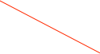

LabJack U6


The LabJackU6 USB DAQ unit has 14 single ended ADC inputs (or 7 differential inputs), twenty digital I/O inputs that can be configured as input or output, a counter, and two DAQ outputs. More product information can be found online at: https://labjack.com/products/u6.
You need the correct serial number to be able to open a port to the labjack. You can get it by clicking the ‘probe’ button in the dialog. All connected U6 labjacks will be queried and their serial numbers will be listed to the status log.
Put your device’s serial number here
If enabled, counters use the first two digital I/O bits.


The direction of the I/O bit. Checked means it is an input bit
The values of the input bits. Blank if the bit is an output.
The values of the output bits. Blank if the bit is an input.

The ADC values. You can edit the units and specify that a channel is single ended or differential.
DAQ outputs. Note that they must be enabled to work
When displayed in an ORCA process these process limits are used for alarm limits.
When displayed in an ORCA process, the min and max values of the displayed meter need to be known.
The displayed ADC values can be scaled to represent physically meaningful numbers like Temperature or Voltage. There are internal (hardcoded) calibrations -- the values here can be used to tweak the final result.
Range selection: +/-10V, +/-1V, etc.
Channel names can be edited. Just double-click
If you ship the data into the data stream the format is as follows:
xxxx xxxx xxxx xxxx xxxx xxxx xxxx xxxx
^^^^ ^^^^ ^^^^ ^^-----------------------data id
^^ ^^^^ ^^^^ ^^^^ ^^^^-length in longs
xxxx xxxx xxxx xxxx xxxx xxxx xxxx xxxx
^^^^ ^^^^ ^^^^ ^^^^- device id
xxxx xxxx xxxx xxxx xxxx xxxx xxxx xxxx adc chan 0 encoded as a float
xxxx xxxx xxxx xxxx xxxx xxxx xxxx xxxx adc chan 1 encoded as a float
xxxx xxxx xxxx xxxx xxxx xxxx xxxx xxxx adc chan 2 encoded as a float
xxxx xxxx xxxx xxxx xxxx xxxx xxxx xxxx adc chan 3 encoded as a float
xxxx xxxx xxxx xxxx xxxx xxxx xxxx xxxx adc chan 4 encoded as a float
xxxx xxxx xxxx xxxx xxxx xxxx xxxx xxxx adc chan 5 encoded as a float
xxxx xxxx xxxx xxxx xxxx xxxx xxxx xxxx adc chan 6 encoded as a float
xxxx xxxx xxxx xxxx xxxx xxxx xxxx xxxx adc chan 7 encoded as a float
xxxx xxxx xxxx xxxx xxxx xxxx xxxx xxxx counter
xxxx xxxx xxxx xxxx xxxx xxxx xxxx xxxx
--------------------^^^^ ^^^^ ^^^^ ^^^^ DO Direction Bits
---------------^^^^-------------------- IO Direction Bits
xxxx xxxx xxxx xxxx xxxx xxxx xxxx xxxx
--------------------^^^^ ^^^^ ^^^^ ^^^^ DO Out Bit Values
---------------^^^^-------------------- IO Out Bit Values
xxxx xxxx xxxx xxxx xxxx xxxx xxxx xxxx
--------------------^^^^ ^^^^ ^^^^ ^^^^ DO In Bit Values
---------------^^^^-------------------- IO In Bit Values
xxxx xxxx xxxx xxxx xxxx xxxx xxxx xxxx seconds since Jan 1, 1970
xxxx xxxx xxxx xxxx xxxx xxxx xxxx xxxx spare
xxxx xxxx xxxx xxxx xxxx xxxx xxxx xxxx spare